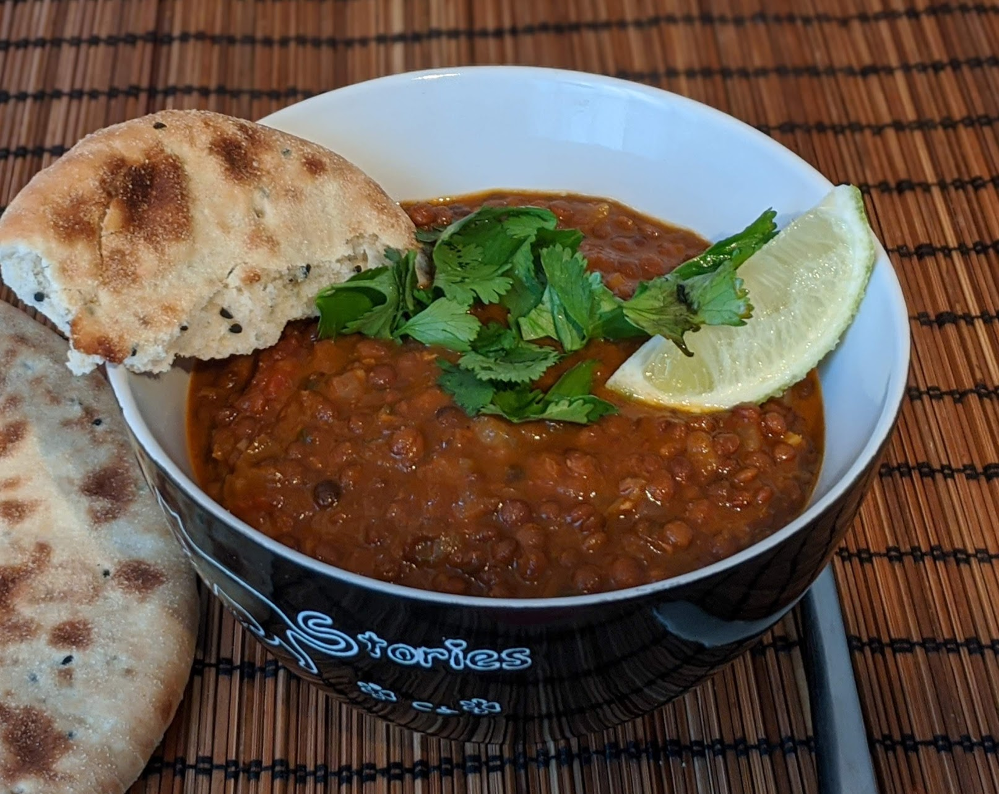

Ragoût crémeux de lentilles noires

Pour 4 personnes :
- 250g de lentilles noires (idéalement, « haricot urd », sinon des lentilles beluga)
- 100g de beurre
- Deux gros oignons
- Trois gousses d'ail
- Un bon pouce de gingembre
- Deux cuillères à café de cumin en poudre
- Deux cuillères à café de coriandre en poudre
- Une cuillère à café de curcuma
- Une demi-cuillère à café de piment en poudre
- Un petit bouquet de coriandre
- Un demi-litre de bouillon de légumes (ou d'eau)
- Une boîte (400mL) de tomates concassées
- Un piment rouge
- 100mL de crème liquide
- Un citron vert pour le service
- Faire tremper les lentilles dans une quantité généreuse d'eau froide pendant au moins 4 heures.
- Éplucher et émincer l'oignon, le faire dorer avec le beurre dans une mijoteuse. Éplucher et écraser l'ail, le rajouter, éplucher et émincer le gingembre, le rajouter, et faire revenir le tout jusqu'à ce que ça soit bien brun.
- Laver la coriandre, séparer les feuilles et les réserver pour le service. Couper les tiges en morceaux d'un centimètre, et les ajouter dans la mijoteuse avec les épices, le bouillon, les tomates concassées, et les lentilles.
- Laver le piment rouge, percer quelques trous dedans, et le rajouter entier dans la mijoteuse. Faire cuire à réglage doux pendant 5-6 heures (on peut aussi faire ça en deux heures à feu doux dans une cocotte normale).
- Ajouter la crème dix minutes avant la fin de la cuisson. Servir chaud avec des naans ou du riz, accompagné de quartiers de citron vert et de feuilles de coriandre.
Retour à la liste des recettes